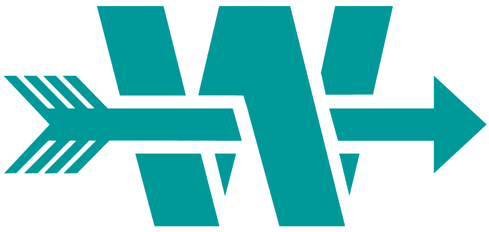
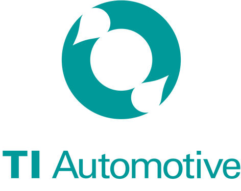

PROFESSIONAL EXPERIENCE
Georgia Tech Research Institute (GTRI)
CIPHER Student Assistant
- Prototyped Software Defined Network (SDN) techniques using software image OpenWrt with a Linksys WRT32X router, Open vSwitch with Raspberry Pi, and Zodiac FX OpenFlow Switch for military communication
- Implemented a keylogging program in C in order to test how efficient a program can track keyboard inputs
- Learned Linux and Python to test and interact with multiple code base for existing and future projects

Archer Western
Project Engineer Intern
- Assisted project manager on Clear Creek West Sewer Improvement Project
- Routinely surveyed jobsite and operated DJI drone to monitor quality control, safety, and project development
- Managed engineering drawings and subcontractor quantities to track project’s units complete for monthly cost report

TI Automotive
Quality Engineer Intern
- Directed a team of 5+ new hires to perform quality control tests in the BMW X5 G01 gas tank trial
- Executed 10+ tests to analyze quality of tanks and filler pipes daily
- Formulated and enforced new work protocol tests to analyze quality of gas tanks and filler pipes
- Trained new employees on proper testing operations and effectively using aforementioned work protocols